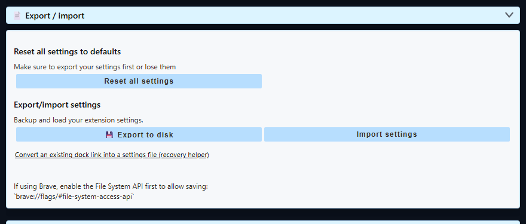

The Safe Rule
- Export settings first. Keep the exported file somewhere outside the app or unpacked-extension folder.
- Do not uninstall the browser extension just to update it. Uninstalling removes that extension installation's stored settings.
- Keep one working copy. Do not overwrite your only backup while troubleshooting a damaged setup.
- After updating, reload the source pages. Reopen generated dock/overlay links and refresh saved OBS Browser Sources when their URLs changed.
Browser Extension Backup (Chrome, Edge, Firefox)
- Open the Social Stream Ninja control panel and scroll to Global settings and tools.
- Avatud Export / import.
- Select Export to disk, choose a safe location, and keep the
.dataextension on the filename. - Confirm that the saved
.datafile is present before updating, uninstalling, or resetting anything. - Kasuta Import settings to restore that file later.

Chrome Web Store and other store-installed extensions: updates normally install in place and preserve settings. Do not uninstall and reinstall the extension just to force an update.
Manual unpacked update: download and extract the new build, replace the old extension files, then select Reload on chrome://extensions. Keep the unpacked folder in place and reload open chat tabs. See manual installation.
Desktop App Backup
| Backup | Menüü | Use It For |
|---|---|---|
| Settings Backup | File → Settings Backup → Export Settings… | Normal updates, settings moves, and first-line recovery. Imports through Import Settings…. |
| Full Session Transfer | File → Advanced Full Session Transfer | Moving or preserving the whole desktop profile, including local sessions and sign-in state. It creates an encrypted .ssappbk file. |
The normal settings export is the right choice for most updates. Full Session Transfer is available only in the desktop app; it is larger and replaces the target profile during restore. The app first keeps a pre-restore-* copy of the current profile.
The desktop app does not update itself automatically. Installing a newer version over the existing installation should preserve the existing profile. Still export first, especially before reinstalling, moving between portable and installed builds, changing channels, or trying a reset.
If Settings Already Disappeared
- Stop resetting and reinstalling. More changes can overwrite the best recovery copy.
- If the app or extension still has useful state, export it before doing anything else.
- Import the newest known-good
.datavõi.jsonsettings backup. - For a desktop whole-profile backup, use Advanced Full Session Transfer.
- If only the desktop source list is damaged, try Clear All Sources. It is narrower than Full Reset and is designed to preserve sessions, cookies, and settings.
- Use Full Reset only after making a backup or after accepting a complete local cleanup.
If you have no export but still have an old dock URL, the dock-link recovery helper can rebuild the session ID, password, and URL-driven settings found in that link. It cannot recreate settings or source accounts that were never present in the URL.
What A Normal Settings Backup Covers
The current desktop settings-transfer test verifies a round trip for the cached Social Stream state and selected app settings. The browser extension export includes its session ID, optional password, state, and settings object.
- Source and global settings represented in the saved state.
- The Social Stream session ID and optional session password.
- Selected desktop preferences used by the app.
A browser-extension .data backup does not include browser cookies or site login sessions. In the desktop app, a normal settings export also does not copy every cookie or site login; use the desktop-only Full Session Transfer when the entire app profile must move.